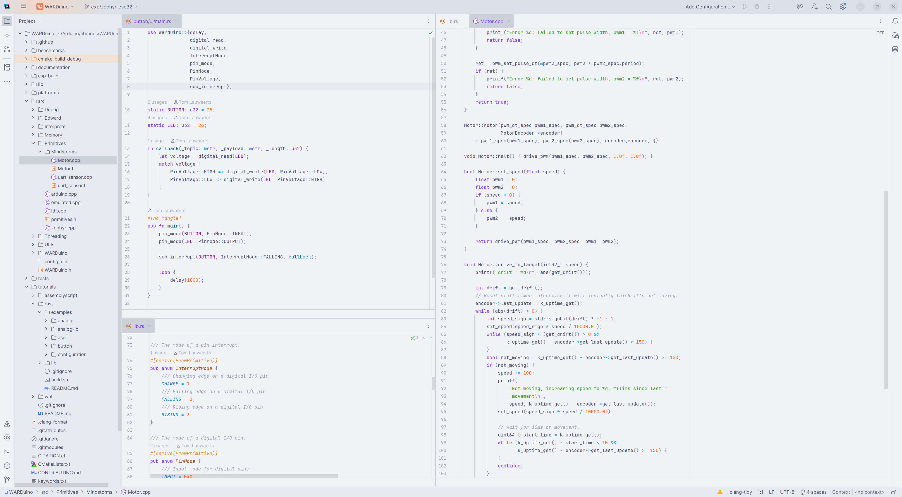
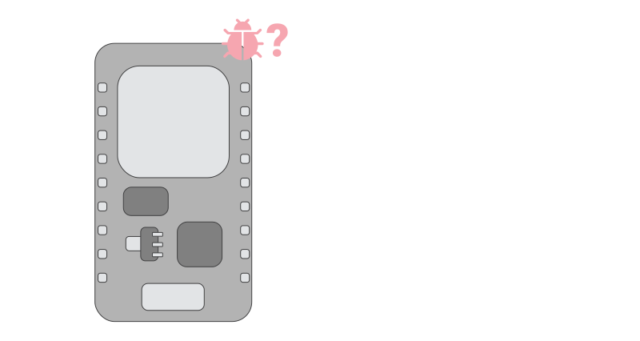
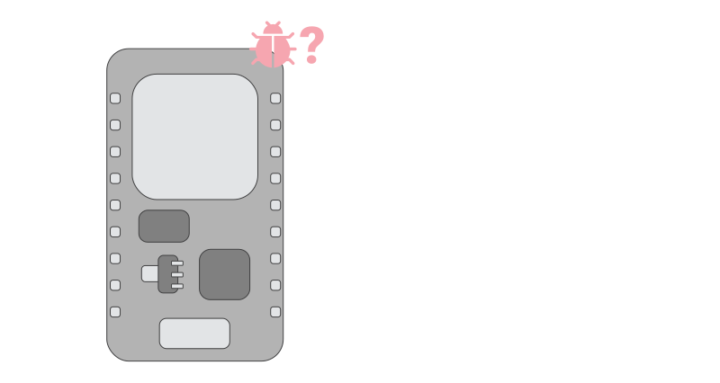
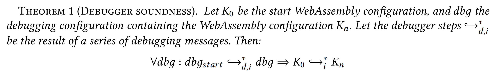

Foundations for Constrained Debugging Techniques
Finding software faults in constrained environments with sound out-of-place and multiverse debugging techniques
de‧bug‧ging
/ˌdiːˈbʌɡɪŋ/ verb
Video by Escarabajo come
pro‧gram‧ming lan‧guages
/ˈprəʊ.ɡræm.ɪŋ ˈlæŋ.ɡwɪdʒ/ noun



for‧mal‧ize
/ˈfɔː.mə.laɪz/ verb


con‧strained
/kənˈstreɪnd/ adjective
Photo by Vishnu Mohanan on Unsplash
 



Hardware debuggers
JTAG and OpenOCD
Chapter 3
A remote debugger for WebAssembly
Figure. An active debug session of the WARDuino VS Code plugin with the remote debugger.
Figure 3-1. The architecture of the WARDuino virtual machine. The different components of the virtual machine are shown in red; the debugger, live code updater, callback handler, and additional WebAssembly modules.
(1) Runtime instrumentation through a remote debugger and live code updater.
(2) Atomic primitives to access peripherals.
(3) Asynchronous primitives through a lightweight callback handling system.
Chapter 4
Stateful out-of-place debugging
Photo by Vishnu Mohanan on Unsplash
Figure 4-2. Request-driven out-of-place debugging.
Figure 4-10. Event-driven out-of-place debugging.
Chapter 5
Multiverse debugging on microcontrollers
Figure 5-1. Screenshot of the MIO debugger debugging a small light sensor program.


